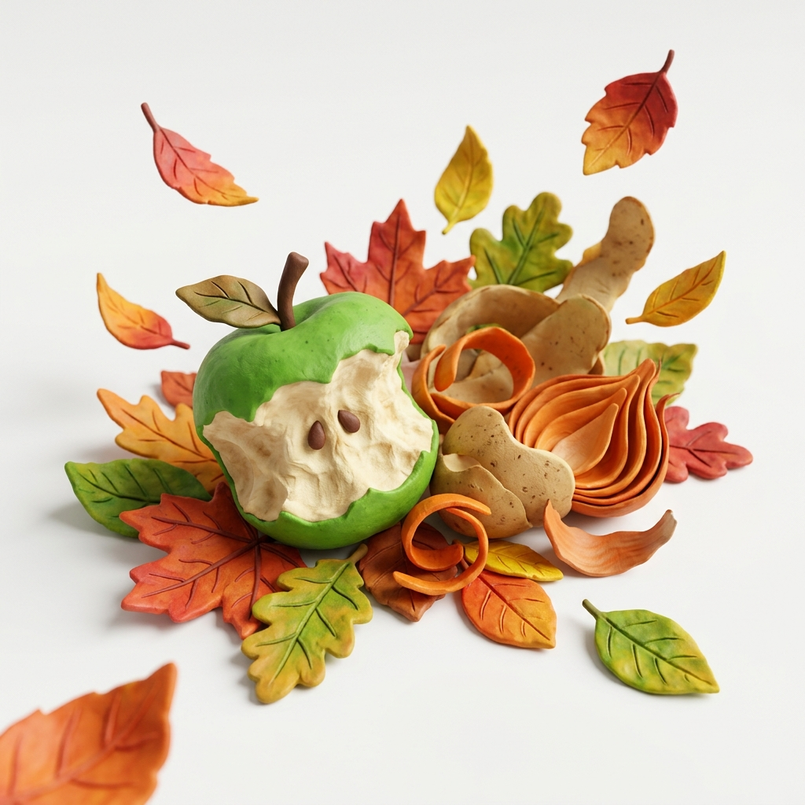
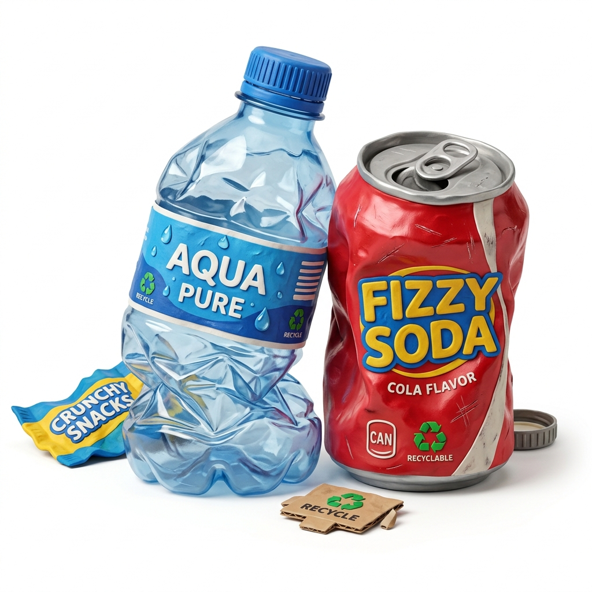
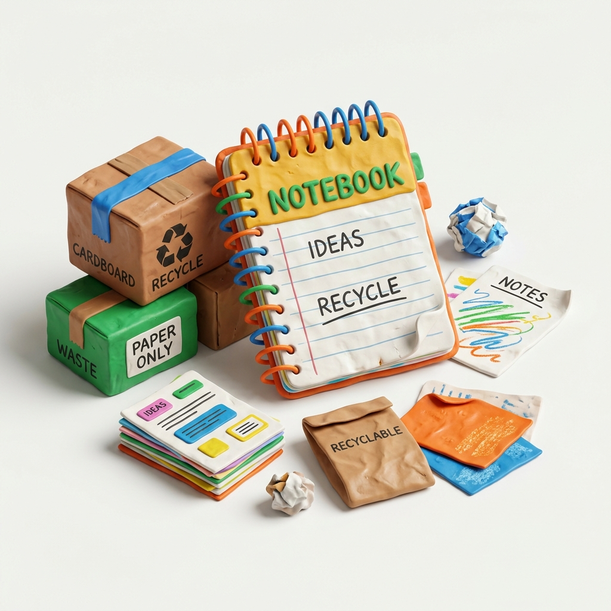
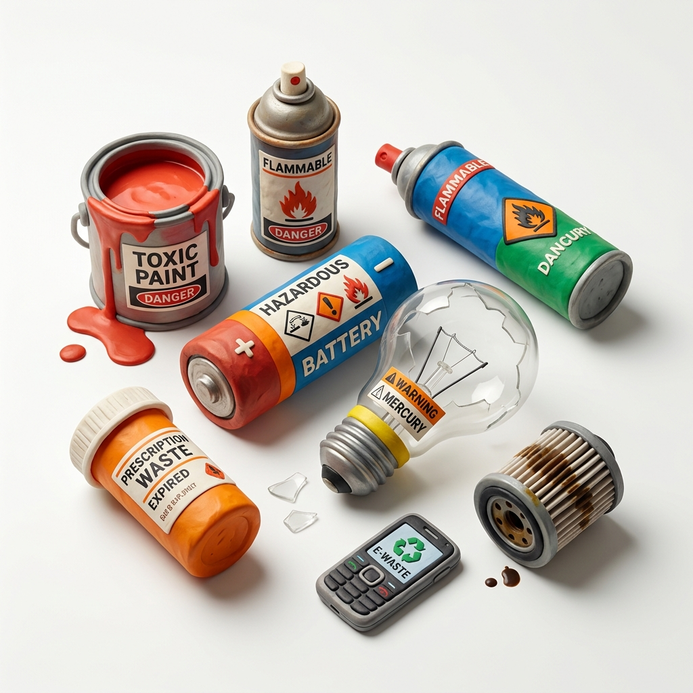

Memulai petualangan...
Portal Edukasi Lingkungan
Selamatkan Bumi Kita Mulai Dari Sekolah!
Selamat datang di EcoEdu UPT SMP Negeri 4 Gadingrejo. Mari bersama-sama belajar memahami, memilah, dan mengelola sampah dengan benar untuk menciptakan lingkungan sekolah yang bersih, sehat, dan hijau.
3R: Reduce, Reuse, Recycle
Pilah Sampahmu
Langkah Hijau
Kurangi penggunaan plastik sekali pakai di sekolah.
Pilahkan Sampah
Pisahkan organik, anorganik, kertas, dan B3.
Kreasi Sampah
Ubah sampah menjadi barang berguna dan kompos.
Materi Pengelolaan Sampah
Pelajari konsep penting mengenai sampah dan cara pengelolaannya untuk siswa SMP.
Mengenal Jenis Sampah
Sampah terbagi menjadi beberapa jenis agar lebih mudah diolah kembali. Yuk pelajari jenis-jenisnya di bawah ini!
Organik (Hijau)

Sampah Basah / Mudah Membusuk
Sampah yang berasal dari makhluk hidup dan dapat terurai secara alami oleh mikroorganisme.
- Sisa makanan & sayuran
- Dedaunan kering & ranting
- Kulit telur & tulang
Pengolahan: Bisa dijadikan pupuk kompos berkualitas untuk tanaman sekolah.
Anorganik (Kuning)

Sampah Kering / Sulit Terurai
Sampah yang dihasilkan dari proses teknologi dan membutuhkan waktu puluhan hingga ratusan tahun untuk hancur secara alami.
- Botol plastik & gelas plastik
- Styrofoam & kemasan saset
- Pecahan kaca & kaleng logam
Pengolahan: Didaur ulang menjadi produk baru atau kerajinan tangan (kreativitas siswa).
Kertas (Biru)

Khusus Sampah Berbahan Kertas
Meskipun organik, memisahkan kertas mempermudah daur ulang kertas menjadi kertas koran atau kardus baru tanpa tercemar minyak makanan.
- Buku tulis bekas & LKS
- Koran & majalah bekas
- Kardus & karton makanan
Pengolahan: Disalurkan ke Bank Sampah sekolah atau pabrik bubur kertas (pulp).
B3 - Berbahaya (Merah)

Bahan Berbahaya & Beracun
Sampah yang mengandung zat kimia berbahaya yang dapat mencemari lingkungan dan membahayakan kesehatan manusia.
- Baterai bekas & komponen HP
- Lampu TL/Neon yang rusak
- Kaleng semprotan parfum/pembasmi serangga
Perhatian: Harus dikumpulkan terpisah untuk diolah oleh pihak berwenang secara aman. Jangan dicampur sampah lain!
Game Pilah Sampah
Asah kemampuanmu memilah sampah dengan menyortir item sampah ke dalam tong sampah yang benar!
Skor Saya
0
Terpilah Benar
0 / 0
Item Sampah untuk Dipilah:
ORGANIK
ANORGANIK
KERTAS
B3
Kuis Pengelolaan Sampah
Uji wawasanmu tentang pemilahan dan pengelolaan sampah. Dapatkan skor terbaik dan tunjukkan kepedulianmu pada lingkungan!
Siap Menjadi Pahlawan Lingkungan?
Kuis ini terdiri dari 10 pertanyaan pilihan ganda seputar jenis sampah, prinsip 3R, dan dampak sampah bagi lingkungan sekitar sekolah.
- 10 pertanyaan menantang
- Urutan soal & pilihan jawaban diacak berbeda tiap siswa
- Penjelasan singkat setelah menjawab
- Dapatkan sertifikat digital (badge) di akhir kuis
Urutan soal disesuaikan berdasarkan nama agar setiap siswa mendapat susunan berbeda.
Di bawah ini yang merupakan contoh sampah organik adalah...
Luar Biasa! Kamu Pahlawan Lingkungan!
Kamu menjawab 9 dari 10 pertanyaan dengan benar.
90%
Skor Akhir
Petualangan 3R Siswa
Misi petualangan interaktif mengambil keputusan ramah lingkungan di sekolah UPT SMPN 4 Gadingrejo!
Poin Kesadaran Lingkungan
0